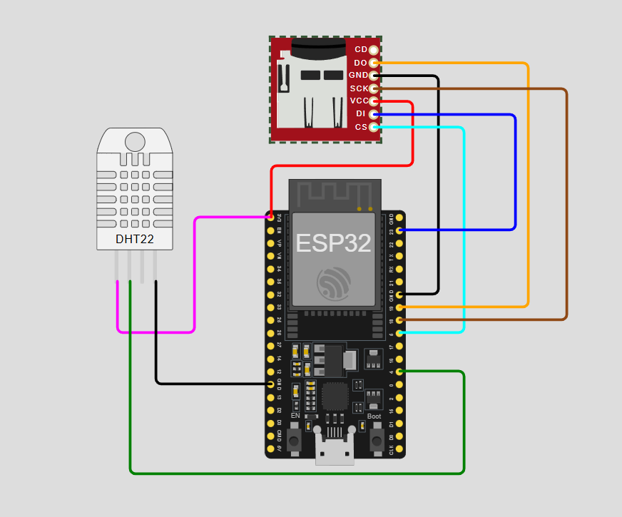
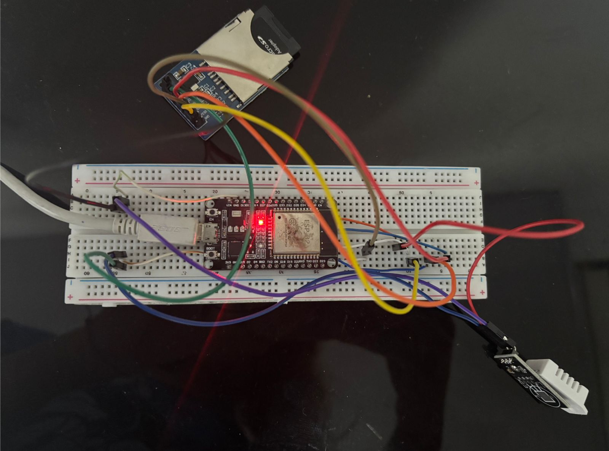

Diseño del Circuito
El circuito fue diseñado y validado previamente en el simulador Wokwi, una plataforma online que permite emular el comportamiento real del ESP32 junto con sus periféricos antes de realizar el montaje físico. Esto permitió verificar las conexiones y el funcionamiento del código sin riesgo de dañar los componentes.

Figura 1. Simulación del circuito en Wokwi. Se observan el ESP32, el sensor DHT22 y el módulo MicroSD con sus respectivas conexiones antes del montaje físico.
Una vez validado el diseño en simulación, se procedió al montaje físico del circuito. El resultado fue un sistema funcional, compacto y estable, capaz de realizar lecturas continuas de temperatura y humedad y almacenarlas en la tarjeta SD de forma confiable.

Figura 2. Circuito físico montado y en operación. El sistema integra el ESP32, el sensor DHT22 y el módulo MicroSD, demostrando la viabilidad de implementar soluciones de monitoreo ambiental de bajo costo con componentes de fácil adquisición.
Diagrama de Conexiones
A continuación se detallan las conexiones físicas entre los componentes. Se eligieron pines específicos del ESP32 por razones técnicas que se explican en cada caso.
🌡️ DHT22 → ESP32
💾 Módulo MicroSD → ESP32 (SPI)
Consideraciones de Diseño
Durante el desarrollo del proyecto se presentaron dificultades con el sensor seleccionado inicialmente, el KY-028, cuyo funcionamiento resultó ser impreciso e inconsistente para las necesidades del sistema.
El KY-028 es un módulo basado en un termistor NTC de 10kΩ que entrega una señal analógica. Para obtener la temperatura en grados Celsius era necesario realizar una conversión matemática en el código asumiendo una constante Beta del termistor, un valor que varía según el fabricante y que no siempre está documentado con precisión. Esto generaba lecturas inestables y poco confiables, haciendo el sensor poco práctico para un sistema de monitoreo que requiere datos consistentes.
Ante esta situación se optó por reemplazarlo con el sensor DHT22, una solución significativamente superior para este tipo de aplicaciones. A diferencia del KY-028, el DHT22 entrega directamente una señal digital calibrada de fábrica, eliminando por completo la necesidad de conversiones manuales o asumir constantes del material. Además mide simultáneamente temperatura y humedad relativa con una precisión de ±0.5°C y ±2%~5% RH, en un rango de -40°C a 125°C, características muy superiores al KY-028 que solo mide temperatura y con una precisión dependiente de la calibración manual. Su protocolo de comunicación de un solo hilo también simplifica notablemente el cableado y el código necesario para su lectura.